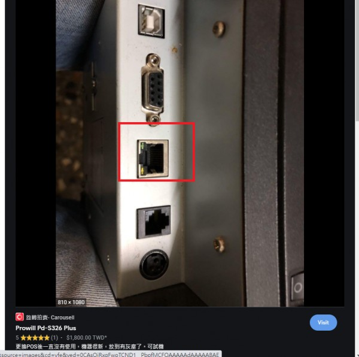

水木行BT578藍芽轉RS232接出單機
想讓它裝BT-578可以讓熊貓平板使用
調整波特率跟出單機同樣，平板也能接到BT-578
但是按平板按測試列印，出單機只動了一下，不過有出現一行亂碼
，猜想是不是因為平板沒有驅動程式的關係
還是其他問題？假如沒有驅動真的沒辦法克服了嗎？
因為出單機已經停產了，舊驅動和用相容驅動都是windos版本
還是有辦法寫程式，讓BT-578接電腦usb,出單機也接電腦usb
讓平板發出的數據傳到電腦，電腦再傳到接usb的出單機印出
不知道這樣辦法可行嗎？
1 個回答
您好
經查詢 PD-S326 有網路孔

建議用無線分享器連接 會比較容易請參考